Everyday repairs
Practical help for the wear and tear around your home.
Add it to the conversation ↗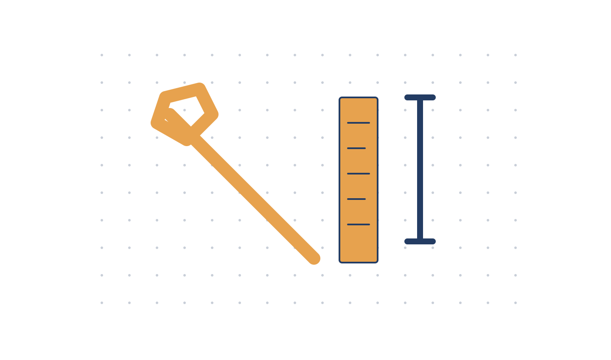
Small repairs. Finishing touches. Practical help for the home projects you keep putting off.
Bring us your job list ↗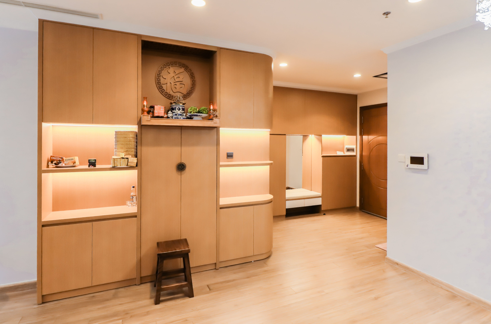
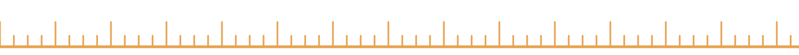
A loose handle, a shelf to fit, a piece of trim to finish. Bring the small projects together so we can discuss a useful scope for your home.
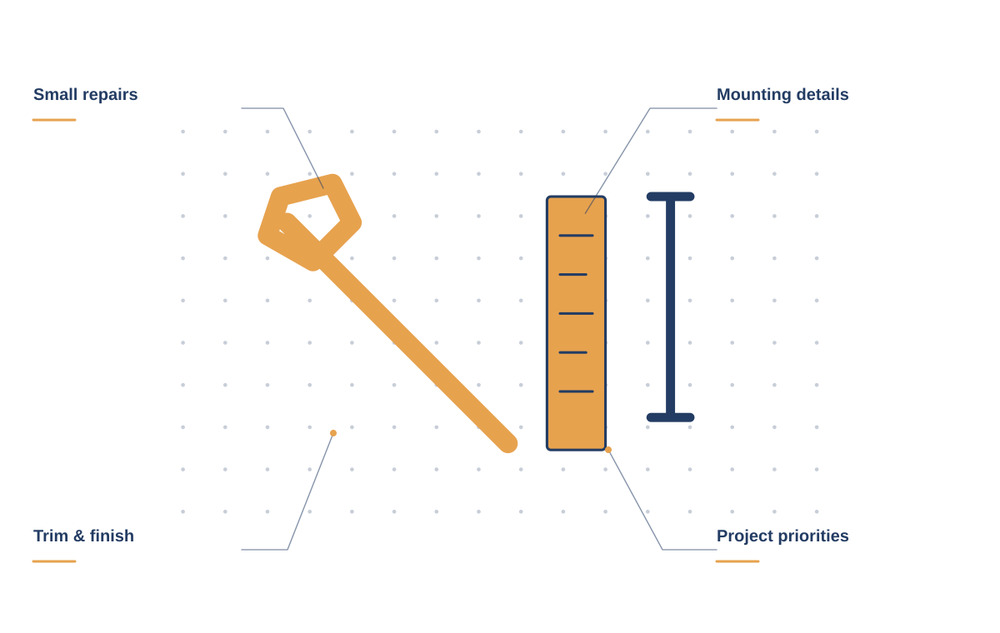
GOODHAND / THE DETAILS MATTERShare the fixtures, fittings, and everyday issues that need attention, with photos where useful.
Tell us about the item, the wall or surface, and where you want it to go.
Review the trim, hardware, and small improvements that will help the room feel complete.
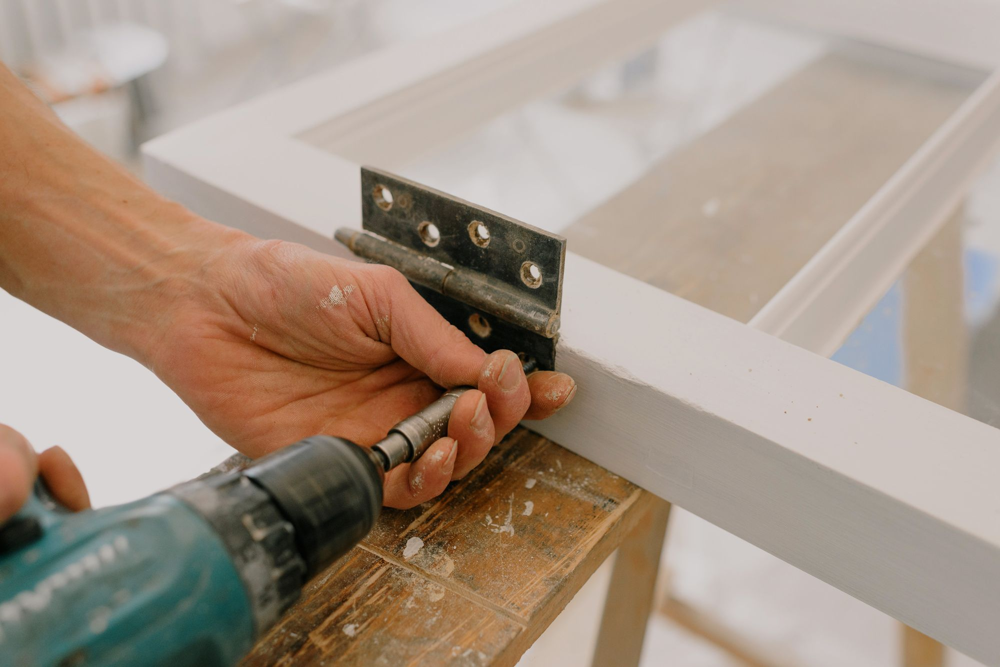
Start with the list you’ve been collecting. We’ll talk through the work, confirm which jobs are a fit, and prepare a clear scope before the tools come out.
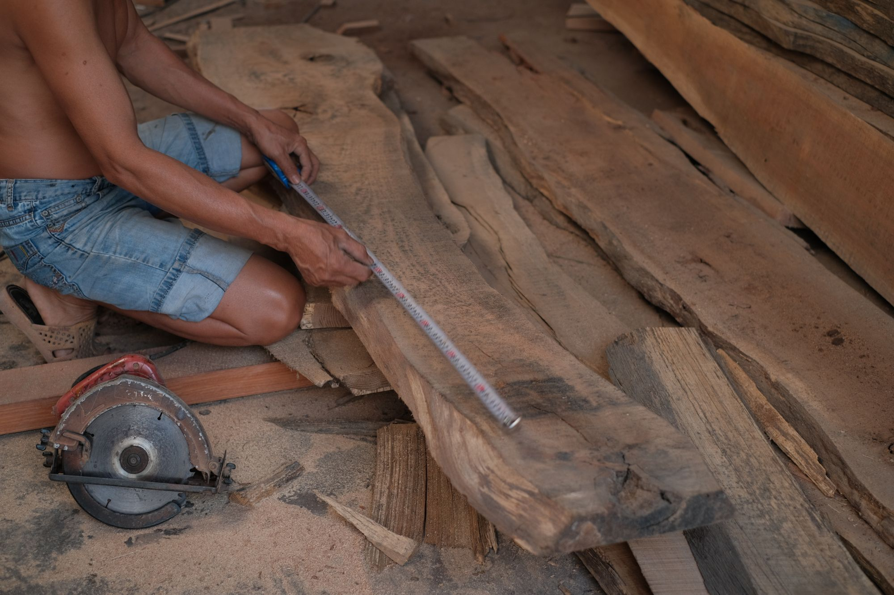
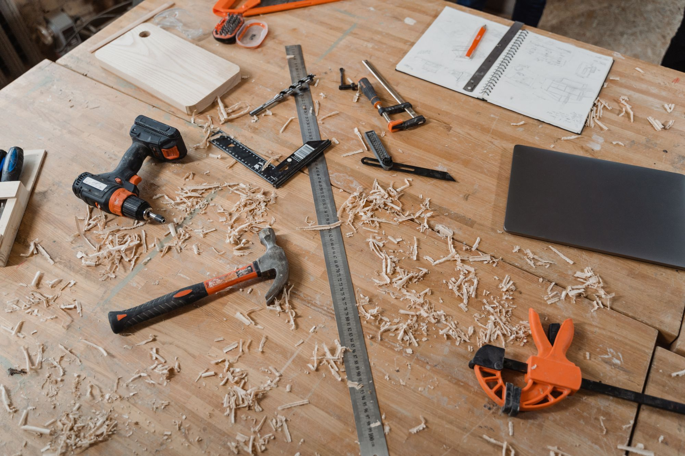
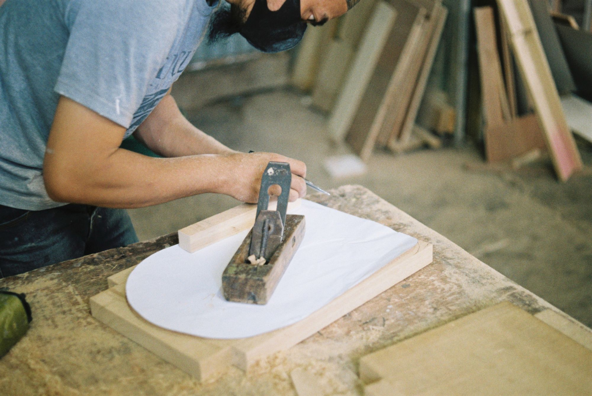
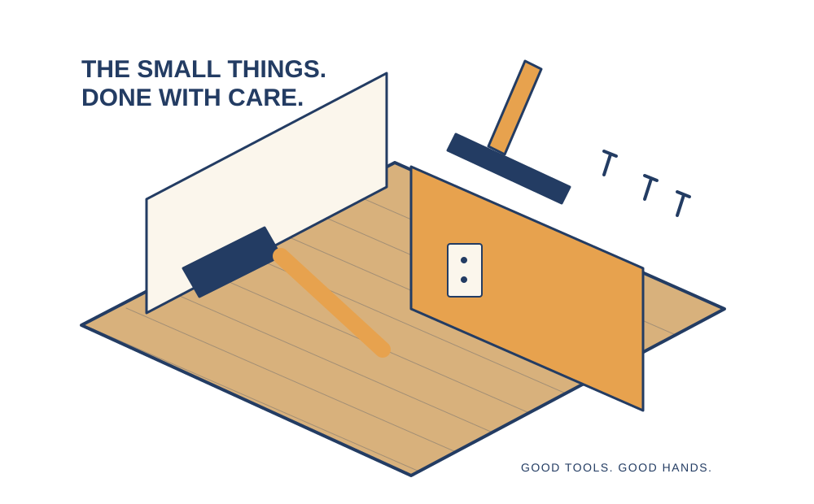
Photos and a few details help us understand each job.
Confirm what’s a fit, materials, and the work involved.
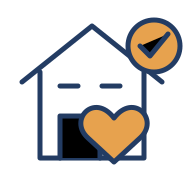
Agree on the scope before the tools come out.
When you get in touch, a little context goes a long way. These are the details that help us start a useful conversation about your handyman project.
Tell us what you have in mind ↗Tell us about your project list so the conversation starts with your situation.
A few details about photos and dimensions help us understand what you need.
Share materials already on hand when you get in touch, including photos where useful.
Let us know about access and priorities so the proposed scope reflects your priorities.
Yes. Add photos where possible so we can review the work, materials, and whether each job is within scope.
Some jobs require a specialist licensed trade. We’ll flag work that needs the appropriate professional.
Let’s agree on the scope and materials first so you have the right items for the job.
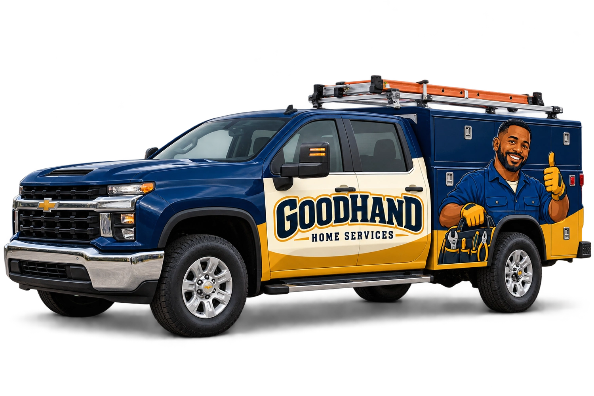